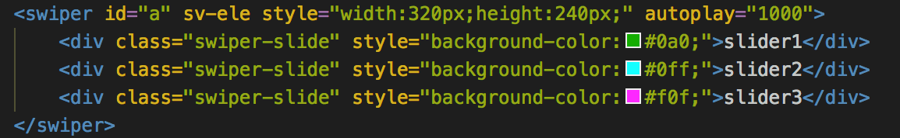

什么是shear.js？
shear.js 让你使用 jQuery API 就能编写 web组件 (web components) 的库；
关于什么是 web组件，相关文献请参考 web components
shear能干什么？
它降低了web组件的开发难度，并完善了兼容性问题；
展示一下什么是 web组件；
下面这个带有 提示样式、进度条和懒加载 特性的图片web组件的效果：
使用它的代码只有简单的一行；
<lazyimg sv-ele width="100%" src="test.jpg"></lazyimg>
而这个 <lazyimg> 就是封装好的 web组件，使用起来跟 <img> 一样，不需要特别去写javascript初始化操作，因为这些操作web组件都帮你完成了；
再举一个例子；
代码量是
用起来是不是很像<select>；同样不需要再写一遍javascript初始化操作
这些就是 web组件 ，像是注册到原生浏览器里的标签，一个使用成本很低的东西，只要你懂得html就会使用；
虽然web组件使用成本低，但开发成本不低，开发一个web组件需要有一定的javascript基础；并且现阶段只能在Chrome浏览器上使用；
而使用shear.js来开发web组件的话，你只需要会使用 jQuery 即可，并且还能使用一些MVVM框架（例如声明式渲染）的特性和jQuery的语法糖；还解决了兼容性问题（最终封装成一个js文件）；
关于如何开发 shear.js 的组件，请移步到 shearjs组件开发